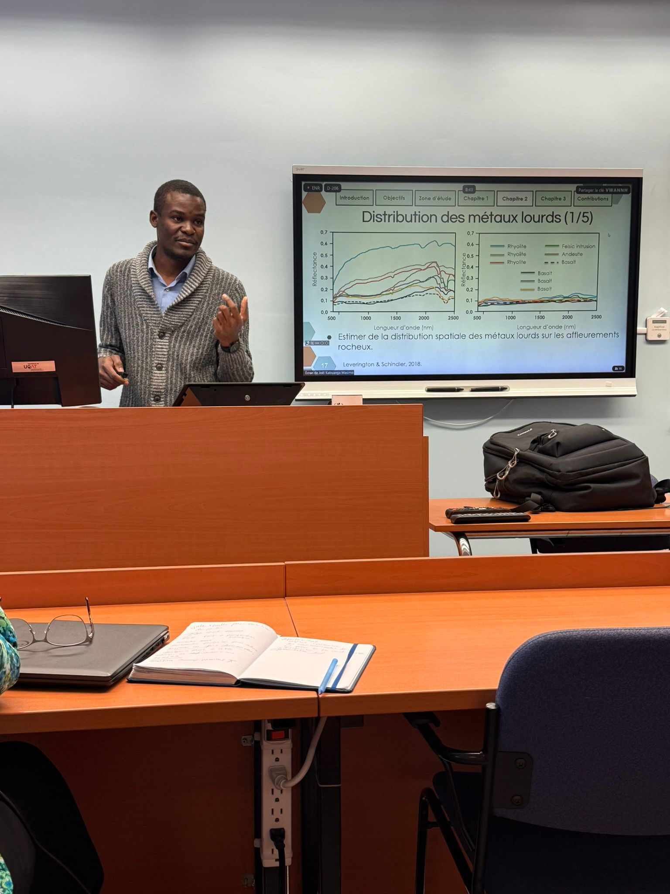
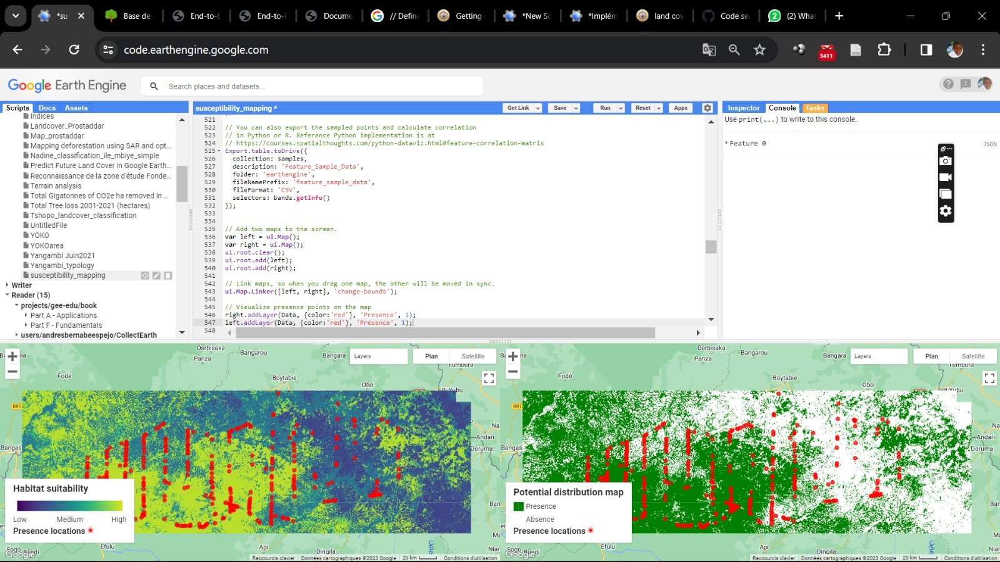
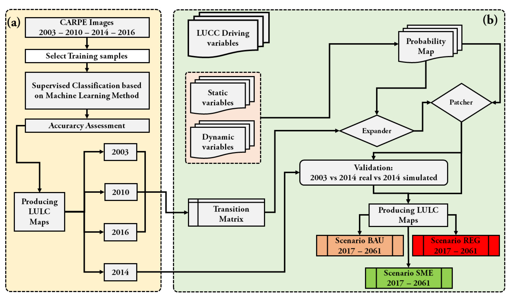

Who am I?
Researcher | Teaching Assistant
My name is Joël Masimo Kabuanga. I am a
Teaching Assistant at the Université du Bas-Uélé
and a PhD candidate in Spatial Ecology at the
Université du Québec en Abitibi-Témiscamingue (UQAT), Canada.
I hold a Master’s degree in Biodiversity Conservation from the
University of Kisangani (UNIKIS), completed under the supervision of
Professor
Onésime Mubenga Kankonda
and Dr.
Landing Mané
(Central African Forest Observatory – OSFAC).
My research focuses on understanding how human activities transform landscapes
and ecosystems across tropical and boreal environments. I combine
remote sensing, machine learning and
spatial ecology to map anthropogenic pressures, analyse landscape dynamics
and fragmentation, assess environmental impacts, and support sustainable land management.
My current work addresses land-use change, agricultural expansion, artisanal mining,
protected area effectiveness, trace metal contamination, and socio-ecological adaptation
in forest-dependent communities.
Through interdisciplinary approaches, I aim to advance the understanding of
human–environment interactions and contribute to evidence-based
conservation and territorial planning.
- Mapping anthropogenic pressures on landscapes
Detecting, mapping and predicting human pressures such as agricultural expansion, artisanal mining, infrastructure development and human activities within protected areas using remote sensing, machine learning and spatial modelling. - Landscape dynamics, fragmentation and ecosystem resilience
Studying land-use dynamics, forest fragmentation, habitat connectivity and ecological resilience through satellite time series, landscape ecology and spatial pattern analysis. - Environmental impacts and ecological restoration of disturbed ecosystems
Investigating trace metal contamination, mine drainage processes, geological controls and restoration challenges in mining and industrial landscapes. - Socio-ecological adaptation and sustainable territorial governance
Exploring livelihood diversification, participatory land-use planning, community conservation and governance strategies for sustainable resource management.
Personal Info
- Email : lipmalex@gmail.com
- ORCID : 0000-0002-8826-4072
- Scopus ID : 57210646913
- Research Profiles : Google Scholar , ResearchGate , CEF , Chaire AFD
- Phone : +243 826 369 021
- Address : Kisangani, DR Congo
My Expertise
Remote sensing
Landsat, Sentinel, PlanetScope, ASTER, MODIS, SRTM.
GIS and web mapping
Production, analysis and valorization of geographic information.
Land-use planning
Participatory mapping, land-use scenarios and simple land-use plans.
My Resume
Experience
2020 - 2023
GIS expert
Project to stabilize deforestation and forest degradation and sustainably improve the incomes of local communities in Bas-Uélé Province.
Antwerp Zoo Foundation, Buta, DR Congo
2020
GIS expert
Rural diagnosis in the Lokutu area, DR Congo.
Earthworm Foundation, Lokutu, DR Congo
2015 - 2016
GIS expert
Local environmental and social management plan in the Mambasa chiefdom, DR Congo.
Education
2023 - Present
PhD in Spatial Ecology
Université du Québec en Abitibi-Témiscamingue, Canada.
2016 - 2018
MSc in Biodiversity Conservation
University of Kisangani, DR Congo.
2012 - 2013
BSc in Ecosystem Management
University of Kisangani, DR Congo.
Skills
ArcGIS Pro
QGIS
ENVI
R
SEPAL
Google Earth Engine
Languages
French
Lingala
Swahili
English
My Publications
The map shows the distribution of the study areas for my work.
Peer-reviewed Research Articles
Working Papers & Preprints
Manuscripts in Preparation
Publication Metrics
0
Peer-reviewed papers
0
Preprints
0
Manuscripts
Loading...
Citations
Scientific Activities
Oral Presentations
- Kabuanga, J. M., Nicole J. Fenton and Osvaldo Valeria. Rôle de la végétation dans la modulation de l’accumulation des éléments traces métalliques sur les affleurements rocheux en paysage boréal contaminé. 17e colloque annuel du CEF, Université Laval, Québec. (2026-05-25)
- Kabuanga, J. M., Nicole J. Fenton and Osvaldo Valeria. Surface cover types modulate trace metal(loid)s accumulation on rock outcrops near a copper smelter. Congrès Bois, Forêt et Biodiversité en contexte minier — Chaire AFD, UQAT, Rouyn-Noranda. (2026-04-22)
- Kabuanga, J. M. Comment les caractéristiques géologiques des roches influencent-elles la contamination du sol par les métaux lourds et le drainage acide des mines ? Examen doctoral, UQAT, Rouyn-Noranda. (2025-05-29)
- Kabuanga, J. M., Nicole J. Fenton and Osvaldo Valeria. Détection de l'accumulation des métaux lourds sur des recouvrements d'affleurements rocheux autour de la fonderie de Rouyn-Noranda. ONICSE, UQAT, Rouyn-Noranda. (2025-05-27)
- Kabuanga, J. M., Nicole J. Fenton and Osvaldo Valeria. Détection de l'accumulation des métaux lourds sur des recouvrements d'affleurements rocheux autour de la fonderie de Rouyn-Noranda. 6e colloque de la Chaire BCM, UQAT. (2025-03-21)
- Kabuanga, J. M. Détection à haute résolution spatiale des principaux métaux lourds qui affectent l’établissement de la végétation sur les affleurements rocheux. Projet de thèse, UQAT. (2024-11-12)
Poster Presentations
- Kabuanga, J. M., Nicole J. Fenton and Osvaldo Valeria. Contamination métallique des affleurements rocheux : le rôle modulateur de la végétation boréale autour de la fonderie de Rouyn-Noranda. 27e colloque annuel de la Chaire AFD, Rouyn-Noranda. (2026-04-21)
- Kabuanga, J. M., Nicole J. Fenton and Osvaldo Valeria. Cartographie des affleurements rocheux et détermination de leurs états de surface autour de la fonderie de cuivre de Rouyn-Noranda. 26e colloque de la Chaire AFD, Val-d'Or.
- Kabuanga, J. M., Nicole J. Fenton and Osvaldo Valeria. Détection des principaux métaux lourds sur les affleurements rocheux autour de la fonderie de Rouyn-Noranda à l'aide de la télédétection à haute résolution spatiale. 17e colloque annuel du CEF, UQO, Gatineau. (2024-05-02)
- Kabuanga, J. M., Nicole J. Fenton and Osvaldo Valeria. Caractérisation de la distribution spatiale de la végétation de la zone d’influence de la fonderie par télédétection. 25e colloque de la Chaire AFD, Rouyn-Noranda. (2023-11-28)
Workshops and Training
- 2026-05-27: Co-facilitator of the workshop Introduction to Google Earth Engine: fundamentals and applications in forest ecology and management, CEF Annual Meeting, Université Laval, Québec. Workshop materials
- 2025-05-06: Co-facilitator of the workshop Introduction to Google Earth Engine, CEF Annual Meeting, Rimouski, Québec.
My Pictures


{kind=link}
{kind=link}
{kind=link}
{kind=link}
Latest Projects

High-resolution detection of trace metals on rock outcrops near the Rouyn-Noranda copper smelter
This PhD project develops remote sensing and machine learning approaches to characterize rock outcrop surface conditions and trace metal accumulation near the Horne smelter in Rouyn-Noranda, Québec.
Keywords: rock outcrops, trace metals, smelter, restoration, remote sensing, boreal forest, Canada.
Read more
Mapping human pressure in a Central African protected area using machine learning and aerial survey data
This project uses ecological monitoring data, aerial survey observations and machine learning to predict the spatial distribution of human activities in a protected area of northern DR Congo.
Keywords: machine learning, biodiversity, ecological monitoring, remote sensing, protected areas, Congo.
Read more
Mapping and Modelling Deforestation in the Ituri–Epulu–Aru Landscape (Democratic Republic of the Congo)
The Ituri–Epulu–Aru Landscape (IEAL), located in northeastern Democratic Republic of the Congo, is one of Central Africa's most biodiverse forest regions and plays a critical role in biodiversity conservation and local livelihoods. However, increasing pressures from small-scale agriculture, population growth, infrastructure development and extractive activities are accelerating forest loss and landscape transformation.
This research project integrates remote sensing, machine learning and spatial modelling to understand the drivers, trajectories and governance dimensions of deforestation across the landscape. The project combines three complementary components.
First, historical land-use dynamics and future deforestation trajectories were
analysed using multi-temporal satellite imagery and scenario-based modelling in
DINAMICA EGO. Alternative development pathways highlighted the long-term implications
of business-as-usual, rapid economic growth and sustainable management strategies
for forest conservation.
Scenario modelling article
Second, a reproducible machine learning framework based on Random Forest was developed
to improve deforestation mapping in cloud-prone tropical environments using multisource
remote sensing data. The study demonstrated the value of combining spectral, vegetation
and geomorphological variables to enhance the detection of old-growth forest loss.
Random Forest mapping article
Third, the project evaluated the effectiveness of functional zoning within the
Okapi Wildlife Reserve by examining land-use and land-cover dynamics across conservation,
agricultural, hunting and unallocated zones. Results showed that zoning alone does not
determine conservation outcomes; rather, its effectiveness depends on governance capacity,
accessibility, local livelihood strategies and resource availability.
Functional zoning preprint
Overall, this research advances understanding of how human pressures, land-use policies and environmental governance interact to shape deforestation patterns in tropical forest landscapes. The findings provide evidence-based insights to support adaptive conservation planning and sustainable land management in the Congo Basin.
Read more